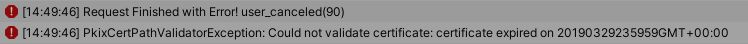

About
Implementing a good certification validation isn't an easy task, but this addon aims even higher. It implements the same steps a browser does to ensure the communication over the negotiated connection is safe and secure. Additionally, provides a management window to easily manage trusted certificates, update and test them. This addon implements all certification verification steps a browser normally do and additionally provides a management window to easily manage trusted certificates, update and test them.
Take a step further to improve the security of all protocols connecting through a TLS connection with a one line setup. Works with all protocols Best HTTP/2 supports.
All source code included. Requires the latest version of Best HTTP/2. Link to the addon's store page: https://assetstore.unity.com/packages/tools/network/best-http-2-tls-security-addon-184441.
Features
- Certificate Chain Verification as described in RFC 3280
- Revocation checking of leaf certificates using OCSP with optional soft and hard fail
- Caching OCSP responses
- Support for OCSP Must-Staple
- Trusted Root CA, Trusted Intermediate and Client Credentials management through an easy to use Certification Manager Window to
- Update all certificates from a trusted source
- Add custom certificates
- Delete non-needed certificates
- Domain Name Matching
- Client Authentication
- Wide variety of options to configure almost every bits of the addon
Setup Guide
This addon doesn't require any installation steps, but it's recommended to import after the Best HTTP/2 package. After importing the package just must call one function on application startup:
#if !UNITY_WEBGL || UNITY_EDITOR
using BestHTTP.Addons.TLSSecurity;
TLSSecurity.Setup();
#endif
Calling TLSSecurity.Setup() going to set up the addon and installs itself as sets its TlsClient factory as the default one. One part of the setup phase is to load the databases into memory and write it to the application's persistent data path (with default settings) and unload the resource.
This step needed as the databases going to open those files and read into memory only the required chunks. While it has some disk overhead, more complexity and can work on platforms and devices where it can create and write into a new file, it greatly reduces runtime memory requirements.
This step also done only once, when the files are there no resources going to be loaded and written. To make updating certification databases possible, a hash file is generated and compared in the Setup call, so even if the files are there but the hashes are different a new file going to be written.
Notice
Under WebGL BestHTTP/2 must use the underlying browser's XmlHTTPRequest implementation, all tls verification is done by the browser.
How To Detect TLS Certification Verification Failures
If certification verification fails, the connection going to be terminated the HTTPReqest's State going to be HTTPRequestStates.Error. The request's Exception property is a reference to an exception containing more information about the issue:
void OnRequestFinished(HTTPRequest req, HTTPResponse resp)
{
switch (req.State)
{
// The request finished without any problem.
case HTTPRequestStates.Finished:
if (resp.IsSuccess)
{
Debug.Log("Done!");
}
else
{
Debug.LogWarning(string.Format("Request finished Successfully, but the server sent an error. Status Code: {0}-{1} Message: {2}", resp.StatusCode, resp.Message, resp.DataAsText));
}
break;
// The request finished with an unexpected error. The request's Exception property may contain more info about the error.
case HTTPRequestStates.Error:
Debug.LogError("Request Finished with Error! " + (req.Exception != null ? (req.Exception.Message + "\n" + req.Exception.StackTrace) : "No Exception"));
TlsFatalAlert tlsException = req.Exception as TlsFatalAlert;
if (tlsException != null)
{
Debug.LogException(tlsException);
}
break;
// The request aborted, initiated by the user.
case HTTPRequestStates.Aborted:
Debug.LogWarning("Request Aborted!");
break;
// Connecting to the server is timed out.
case HTTPRequestStates.ConnectionTimedOut:
Debug.LogError("Connection Timed Out!");
break;
// The request didn't finished in the given time.
case HTTPRequestStates.TimedOut:
Debug.LogError("Processing the request Timed Out!");
break;
}
}
For a failed TLS verification, it should produce two log lines, something like this: 